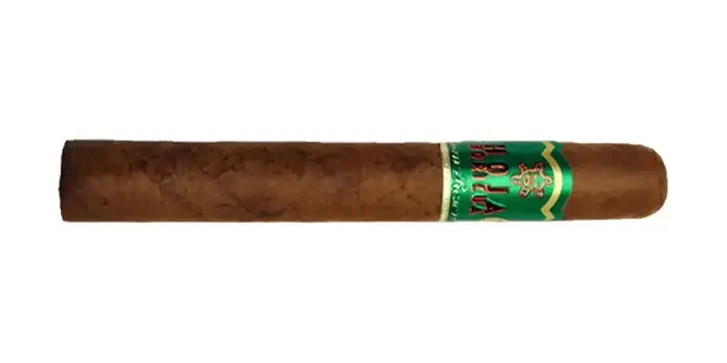

Hoja Boricua Gran Reserva
De JFC Tobacco Corp. / Tabacalera Hoja Boricua · Mayagüez, Puerto Rico
Tripa de hoja puertorriqueña de Comerío con Olor dominicano. JFC lo llama 'el cigarro más fuerte de Puerto Rico'.
- Capa: Corojo (Nicaragua)
- Fortaleza: Fuerte
Fuentes: 1
Ver Hoja Boricua Gran Reserva en la app, califícalo y guárdalo en Mi Hoja.